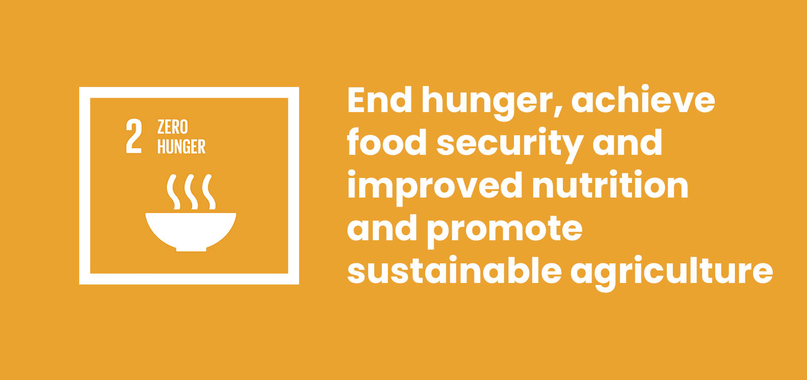

In our allocated groups, we were presented with various United Nations Sustainable Development Goals to choose from, ultimately opting for "Goal 2: Zero Hunger." This research journey lasted several weeks, and our objective was to craft an informative communication piece for a five-minute presentation. Our audience consisted of biology students and a demonstrator, and our chosen focus was target 2.2 within Goal 2.
In our communication piece we recognised the pivotal role of molecular biology in addressing the intricate challenges related to food security and global hunger, we delved deep into the molecular mechanisms governing crop growth, disease resistance, and nutritional content. We aspired to contribute innovative solutions to combat hunger and malnutrition globally.
The focus of our project was to harness the potential of molecular biology to elevate crop yields, increase the nutritional value of food, and enhance the overall resilience of agricultural systems. In doing so, we aimed to advance the objectives of Goal 2 and contribute to a more sustainable, food-secure future for all. The appeal of Goal 2, addressing global challenges of poverty and hunger, resonated deeply with me, given their fundamental significance for human well-being and development.
My interest in this goal was a powerful motivator for my active participation in this assessment. The assessment process, however, presented a fascinating learning journey that, at times, proved to be quite demanding, partly due to a variety of challenges, some within my control and others beyond it. Taking on a leadership role and overseeing the group as the submitter added complexity, and stress especially when critical factors for effective group collaboration were lacking. However, we managed to work around these factors and got the assignment done.